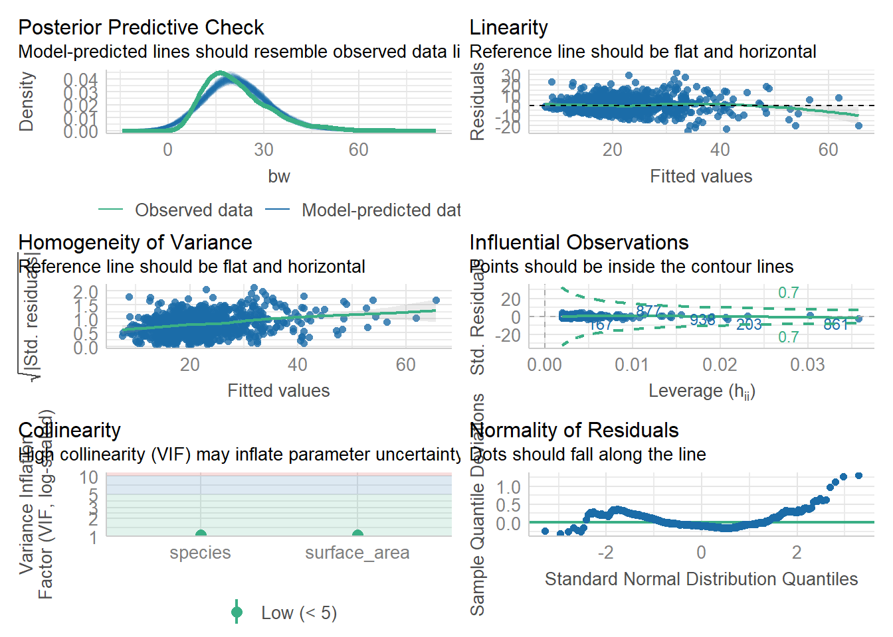

library(palmerpenguins)
library(tidyverse)
library(broom)
library(data.table)
library(performance)
library(patchwork)
library(car)
library(rsample)
library(moderndive) #helps us make useful regression tablesLab 6: Multiple Regression
Lab 6: Multiple Regression and Model Selection
load packages
Multiple Regression is a powerful tool that allows us to investigate the effects of multiple varibles on our response variable of choice. This is great for real world data, as it is almost never the case that we have the effect of a single variable on another. Instead, we often have so many that we need to dig into mixed effects modeling, which is the next step up from multiple regression.
My favorite mixed models selection tutorial: Our Coding Club
We will see examples of how to use multiple regression on real data in this tutorial. To start with, multiple regression can come in multiple forms. The first is additive and the second is interactive. Let’s look at an example.
1.) Using regression to understand the relationship between weight and surface in corals – An example
Read in the data
bz<-read_csv('https://raw.githubusercontent.com/jbaumann3/Belize-RT-Baumann-et-al-2021/main/rt_master_data.csv')Rows: 1064 Columns: 36
── Column specification ────────────────────────────────────────────────────────
Delimiter: ","
chr (14): timepoint, bw_date, ID, species, colony, colony_ID, home_reef, tra...
dbl (22): coralID, parent colony length, parent colony width, parent colony ...
ℹ Use `spec()` to retrieve the full column specification for this data.
ℹ Specify the column types or set `show_col_types = FALSE` to quiet this message.Make surface area into one word for ease of use or make a new column with a better title. up to you!
bz$surface_area<-bz$`surface area`
head(bz)# A tibble: 6 × 37
timepoint bw_date ID species colony coralID colony_ID home_reef
<chr> <chr> <chr> <chr> <chr> <dbl> <chr> <chr>
1 T0 12/11/2017 PSTR 1 1 PSTR P1 1 NSP1 NS
2 T0 12/11/2017 PSTR 1 2 PSTR P1 2 NSP1 NS
3 T0 12/11/2017 PSTR 1 3 PSTR P1 3 NSP1 NS
4 T0 12/11/2017 PSTR 1 4 PSTR P1 4 NSP1 NS
5 T0 12/11/2017 PSTR 1 5 PSTR P1 5 NSP1 NS
6 T0 12/11/2017 PSTR 1 6 PSTR P1 6 NSP1 NS
# ℹ 29 more variables: transplant_reef <chr>, collection_site <chr>,
# transplant_site <chr>, transplant <chr>, `pale or bleached` <chr>,
# `partial mortality` <chr>, mortality <chr>, `parent colony length` <dbl>,
# `parent colony width` <dbl>, `parent colony height` <dbl>,
# `parent colony area` <dbl>, `parent colony volume` <dbl>, bw <dbl>,
# bw_sd <dbl>, bw_se <dbl>, `surface area` <dbl>, sa_sd <dbl>, sa_se <dbl>,
# chla <dbl>, symb_den <dbl>, symb_sd <dbl>, symb_se <dbl>, carbs_sa <dbl>, …We will first run a simple lm to check the relationship between weight (bw) and surface are for each of our two species, separately.
We will start with SSID (one of our species)
#simple lm surface area x bw (for SSID)
ssid<- bz |>
filter(species=='SSID')
ggplot(ssid, aes(x=surface_area, y=bw))+
geom_point()+
theme_classic()+
geom_smooth(method='lm')`geom_smooth()` using formula = 'y ~ x'Warning: Removed 62 rows containing non-finite outside the scale range
(`stat_smooth()`).Warning: Removed 62 rows containing missing values or values outside the scale range
(`geom_point()`).#p=2*10-16, R2=.3439-> SO, not bad. But a lot of spread in the data.
lm1<-lm(bw~surface_area, data=ssid)
summary(lm1)
Call:
lm(formula = bw ~ surface_area, data = ssid)
Residuals:
Min 1Q Median 3Q Max
-24.150 -5.683 -0.730 4.351 32.856
Coefficients:
Estimate Std. Error t value Pr(>|t|)
(Intercept) 8.39205 0.90971 9.225 <2e-16 ***
surface_area 0.77870 0.04951 15.727 <2e-16 ***
---
Signif. codes: 0 '***' 0.001 '**' 0.01 '*' 0.05 '.' 0.1 ' ' 1
Residual standard error: 7.858 on 469 degrees of freedom
(62 observations deleted due to missingness)
Multiple R-squared: 0.3453, Adjusted R-squared: 0.3439
F-statistic: 247.3 on 1 and 469 DF, p-value: < 2.2e-16Here we can see that the R-squared is 0.344 and the p-value is <0.05, so we have a significant positive relationship between X and Y, though there is considerable spread.
And now for PSTR (the other species)
#simple lm surface area x bw (for PSTR)
pstr<- bz |>
filter(species=='PSTR')
ggplot(pstr, aes(x=surface_area, y=bw))+
geom_point()+
theme_classic()+
geom_smooth(method='lm')`geom_smooth()` using formula = 'y ~ x'Warning: Removed 15 rows containing non-finite outside the scale range
(`stat_smooth()`).Warning: Removed 15 rows containing missing values or values outside the scale range
(`geom_point()`).#p=2*10-16, R2=.3439-> SO, not bad. But a lot of spread in the data.
lm2<-lm(bw~surface_area, data=pstr)
summary(lm2)
Call:
lm(formula = bw ~ surface_area, data = pstr)
Residuals:
Min 1Q Median 3Q Max
-20.5937 -4.1412 -0.5371 3.0975 29.7465
Coefficients:
Estimate Std. Error t value Pr(>|t|)
(Intercept) 4.21829 0.62256 6.776 3.4e-11 ***
surface_area 0.84963 0.02665 31.877 < 2e-16 ***
---
Signif. codes: 0 '***' 0.001 '**' 0.01 '*' 0.05 '.' 0.1 ' ' 1
Residual standard error: 6.349 on 514 degrees of freedom
(15 observations deleted due to missingness)
Multiple R-squared: 0.6641, Adjusted R-squared: 0.6634
F-statistic: 1016 on 1 and 514 DF, p-value: < 2.2e-16Here we see that the lm is better of PSTR (better fit because of the higher R-squared). From these analyses, we can generally conclude that there is a relationship between surface area and weight, but that it maybe varies by species.
## additive regression Since we are interested in considering the effect of species on this relationship quantitatively, we need to run a regression model that include species in the model! We can do in two ways– an additive model or an interactive model. Let’s start with additive
lm3<-lm(bw~surface_area+species, data=bz)
summary(lm3)
Call:
lm(formula = bw ~ surface_area + species, data = bz)
Residuals:
Min 1Q Median 3Q Max
-24.888 -4.955 -0.625 3.795 32.245
Coefficients:
Estimate Std. Error t value Pr(>|t|)
(Intercept) 4.67334 0.60574 7.715 2.96e-14 ***
surface_area 0.82782 0.02485 33.319 < 2e-16 ***
speciesSSID 2.89076 0.46404 6.230 6.92e-10 ***
---
Signif. codes: 0 '***' 0.001 '**' 0.01 '*' 0.05 '.' 0.1 ' ' 1
Residual standard error: 7.111 on 984 degrees of freedom
(77 observations deleted due to missingness)
Multiple R-squared: 0.5303, Adjusted R-squared: 0.5294
F-statistic: 555.5 on 2 and 984 DF, p-value: < 2.2e-16Let’s hold off on interpretation until we make a graph. Here, I am showing you a REALLY POWERFUL trick, which is using the augment() function in the broom package to pass model fits directly to ggplot.
lm3g<-lm3 %>%
augment() %>%
ggplot(aes(x=surface_area, y=bw, color=species))+
geom_point(alpha=0.3)+
geom_line(aes(y=.fitted), size=1)+
theme_classic()Warning: Using `size` aesthetic for lines was deprecated in ggplot2 3.4.0.
ℹ Please use `linewidth` instead.lm3gWe can view tables of our multiple regression data in similar ways to how we view our simple lm
summary(lm3) #check R2 and p-value! How well does the model fit?
Call:
lm(formula = bw ~ surface_area + species, data = bz)
Residuals:
Min 1Q Median 3Q Max
-24.888 -4.955 -0.625 3.795 32.245
Coefficients:
Estimate Std. Error t value Pr(>|t|)
(Intercept) 4.67334 0.60574 7.715 2.96e-14 ***
surface_area 0.82782 0.02485 33.319 < 2e-16 ***
speciesSSID 2.89076 0.46404 6.230 6.92e-10 ***
---
Signif. codes: 0 '***' 0.001 '**' 0.01 '*' 0.05 '.' 0.1 ' ' 1
Residual standard error: 7.111 on 984 degrees of freedom
(77 observations deleted due to missingness)
Multiple R-squared: 0.5303, Adjusted R-squared: 0.5294
F-statistic: 555.5 on 2 and 984 DF, p-value: < 2.2e-16summary(lm3)$coefficient #just the coef table from the summary! Estimate Std. Error t value Pr(>|t|)
(Intercept) 4.6733416 0.60574157 7.715075 2.957752e-14
surface_area 0.8278243 0.02484574 33.318557 1.455258e-163
speciesSSID 2.8907561 0.46404112 6.229526 6.923713e-10However, you may find these difficult to interpret. We still see our R squared and p-value for the model itself, which is still important. But, we also have a more complex coefficients table to read. This table shows us an intercept and the effects of surface area and speciesSSID. Where is PSTR? Confusing, huh? In R, the Intercept is something called a ‘base case for comparison’ in which R takes the first category (in alphabetical order) in each categorical variable and isolates it. Here, we only have 1 categorical variable (species) and PSTR comes first. So, intercept is showing us the model for bw~surface area within PSTR only. The ESTIMATE is the y intercept of the PSTR model. 0.82782 is the slope of surface area for the intercept model. And 2.89076 is the offset between the PSTR model and the SSID model. Since it is positive, the offset of the intercepts is 2.89076. Thus, the SSID line should be HIGHER on the y-axis.
Notably, since this is an additive model, the slopes of the lines for each category should ALWAYS be parallel. This is also called a parallel slopes model. Let’s look at the graph (above) to confirm!
Finally, since we understand ANOVA better, we might try this approach
anova(lm3) # an ANOVA table of our lmAnalysis of Variance Table
Response: bw
Df Sum Sq Mean Sq F value Pr(>F)
surface_area 1 54224 54224 1072.239 < 2.2e-16 ***
species 1 1962 1962 38.807 6.924e-10 ***
Residuals 984 49761 51
---
Signif. codes: 0 '***' 0.001 '**' 0.01 '*' 0.05 '.' 0.1 ' ' 1confint(lm3) #CIs for our model predictors! 2.5 % 97.5 %
(Intercept) 3.4846479 5.862035
surface_area 0.7790675 0.876581
speciesSSID 1.9801321 3.801380The confint shows us 95% confidence intervals for our model predictors, which is something we will learn about a little later.
Now, sometimes we care about the effects of 2 variables at the same time and not only how 2 variables (separately) impact our response variable. In this case, we need interactive regression…
Interactive models include multiplication in the formula instead of addition. In interactive models, both the slope and y intercept of the model can vary, so the slopes will no longer be parallel (automatically). Let’s look at the interactive model of the same data we just used.
lm4<-lm(bw~surface_area*species, data=bz)
summary(lm4)
Call:
lm(formula = bw ~ surface_area * species, data = bz)
Residuals:
Min 1Q Median 3Q Max
-24.150 -4.871 -0.570 3.781 32.856
Coefficients:
Estimate Std. Error t value Pr(>|t|)
(Intercept) 4.21829 0.69708 6.051 2.04e-09 ***
surface_area 0.84963 0.02984 28.470 < 2e-16 ***
speciesSSID 4.17376 1.07855 3.870 0.000116 ***
surface_area:speciesSSID -0.07092 0.05383 -1.318 0.187925
---
Signif. codes: 0 '***' 0.001 '**' 0.01 '*' 0.05 '.' 0.1 ' ' 1
Residual standard error: 7.109 on 983 degrees of freedom
(77 observations deleted due to missingness)
Multiple R-squared: 0.5311, Adjusted R-squared: 0.5297
F-statistic: 371.2 on 3 and 983 DF, p-value: < 2.2e-16And the other tables
anova(lm4)Analysis of Variance Table
Response: bw
Df Sum Sq Mean Sq F value Pr(>F)
surface_area 1 54224 54224 1073.0408 < 2.2e-16 ***
species 1 1962 1962 38.8360 6.828e-10 ***
surface_area:species 1 88 88 1.7362 0.1879
Residuals 983 49674 51
---
Signif. codes: 0 '***' 0.001 '**' 0.01 '*' 0.05 '.' 0.1 ' ' 1confint(lm4) 2.5 % 97.5 %
(Intercept) 2.8503641 5.58621772
surface_area 0.7910625 0.90819063
speciesSSID 2.0572380 6.29028297
surface_area:speciesSSID -0.1765531 0.03470322get_regression_table(lm4)# A tibble: 4 × 7
term estimate std_error statistic p_value lower_ci upper_ci
<chr> <dbl> <dbl> <dbl> <dbl> <dbl> <dbl>
1 intercept 4.22 0.697 6.05 0 2.85 5.59
2 surface_area 0.85 0.03 28.5 0 0.791 0.908
3 species: SSID 4.17 1.08 3.87 0 2.06 6.29
4 surface_area:speciesSS… -0.071 0.054 -1.32 0.188 -0.177 0.035We read this regression table the same way we read the additive model one. Except this time, we also have an interactive term. We are interested in how surface area impacts bw, how species impacts bw, and how the relationship between surface area (x) and bw (y) varies by species – basically, do these two regression lines look different in slope, intercept, or both? The last line of the get_regression_table shows us the offset of the slope of surface area in SSID relative to PSTR (the SSID slope is lower). Notably, the p-value is not significant here, so this interaction does not have a significant effect.
Finally, the graph
lm4g<-lm4 %>%
augment() %>%
ggplot(aes(x=surface_area, y=bw, color=species))+
geom_point(alpha=0.3)+
geom_line(aes(y=.fitted),size=1)+
theme_classic()
lm4gOur interactive model suggests that the interaction term does not have a significant effect. Thus, the additive and interactive models should not really signifiacntly differ. AND, the relationship between x and y would then not change based on species.
Let’s compare the graphs side by side to confirm
lm3g+lm4gAnd if you prefer to have them stacked…
lm3g/lm4gRemember that our eyes are often the most valuable tool! We can see that there are only slight differences between these two models and that there are only slight differences between the two species (if that). It turns out that there is a difference between the two species and there is an effect of surface area on bw, BUT there is not a significant interaction (the relationship between surface area and bw does not differ by species). Given that the two models are essentially showing us the same thing, but the additive model is simpler (less complexity because there is not an interaction to calcualte), we would generally prefer to pick the less complex option.
While this is a great rule of thumb, we can also do model selection quantitatively, which we will get to in our model selection section later on…
Model fit assessment and model selection
Here, we want to know how well the models represent the data. We need: 1. The R2 value of the models (closer to 1 is best) 2. The p-value of the models (<0.05 is required for there to be a relationship) 3. We can calculate residual standard error. Lower = more accurate!
The R2 and p are in the summary! Below is the formula for RMSE
summary(lm3)
Call:
lm(formula = bw ~ surface_area + species, data = bz)
Residuals:
Min 1Q Median 3Q Max
-24.888 -4.955 -0.625 3.795 32.245
Coefficients:
Estimate Std. Error t value Pr(>|t|)
(Intercept) 4.67334 0.60574 7.715 2.96e-14 ***
surface_area 0.82782 0.02485 33.319 < 2e-16 ***
speciesSSID 2.89076 0.46404 6.230 6.92e-10 ***
---
Signif. codes: 0 '***' 0.001 '**' 0.01 '*' 0.05 '.' 0.1 ' ' 1
Residual standard error: 7.111 on 984 degrees of freedom
(77 observations deleted due to missingness)
Multiple R-squared: 0.5303, Adjusted R-squared: 0.5294
F-statistic: 555.5 on 2 and 984 DF, p-value: < 2.2e-16#R2=0.5294, p<0.001
summary(lm4)
Call:
lm(formula = bw ~ surface_area * species, data = bz)
Residuals:
Min 1Q Median 3Q Max
-24.150 -4.871 -0.570 3.781 32.856
Coefficients:
Estimate Std. Error t value Pr(>|t|)
(Intercept) 4.21829 0.69708 6.051 2.04e-09 ***
surface_area 0.84963 0.02984 28.470 < 2e-16 ***
speciesSSID 4.17376 1.07855 3.870 0.000116 ***
surface_area:speciesSSID -0.07092 0.05383 -1.318 0.187925
---
Signif. codes: 0 '***' 0.001 '**' 0.01 '*' 0.05 '.' 0.1 ' ' 1
Residual standard error: 7.109 on 983 degrees of freedom
(77 observations deleted due to missingness)
Multiple R-squared: 0.5311, Adjusted R-squared: 0.5297
F-statistic: 371.2 on 3 and 983 DF, p-value: < 2.2e-16#R2=0.5297, p<0.01
#RSE: <- LOWER RSE= more accurate the model!
sigma(lm3)[1] 7.111301sigma(lm4)[1] 7.108642mean(bz$bw, na.rm=T)[1] 21.54501sigma(lm3)/mean(bz$bw, na.rm=T)[1] 0.3300672#0.3300672
sigma(lm4)/mean(bz$bw, na.rm=T)[1] 0.3299438#0.3299438When we look at R2, p, and RMSE, we see that these two models are nearly identical! Not suprising. As we discussed earlier, the “simpler” model is typically the choice when the models are about the same.
We can also get this information from the performance package using model_performance(). This function tells us many things, including R2 and RMSE. We will discuss the rest of this later
model_performance(lm3)# Indices of model performance
AIC | AICc | BIC | R2 | R2 (adj.) | RMSE | Sigma
------------------------------------------------------------------
6678.347 | 6678.387 | 6697.925 | 0.530 | 0.529 | 7.100 | 7.111model_performance(lm4)# Indices of model performance
AIC | AICc | BIC | R2 | R2 (adj.) | RMSE | Sigma
------------------------------------------------------------------
6678.605 | 6678.666 | 6703.078 | 0.531 | 0.530 | 7.094 | 7.109Here we see two tables of MANY values. / The first is AIC or Akaike Information Criterion. AIC is an estimator of prediction error and is generally thought of as a way to rank the relative quality of statistical models. LOWER AIC is best. In our case, the AIC scores are almost exactly the same! AICc is a corrected version of AIC that is better suited for use with small sample sizes. BIC is Bayesian Information Criterion, another way to assess models. Again, lower is better. In our case, we seee that lm4 has a very slightly lower BIC score, but it likely isn’t enough to matter. **R2 and adjusted R2* are familiar to use. RMSE and Sigma are similar to what we just calculated by hand. RMSE = Root mean squared error, which is the square root of the variance of the residuals. It indicates the absolute fit of the model to the data and is a difference between observed data and models predicted values. Sigma is the residual standard deviation. More deviation is less ideal.
We are pretty new to stats, so it is great to have some quick ways to evaluate a model, BUT, we are likely to struggle to interpret this output. Luckily, we can compare performance pretty easily…
We can use check_model to check our assumptions. We care most about collinearity, homogeneity of variance, and outliers (influential observations). Collinearity is often assess with Variance Inflation Factor (VIF). VIF >5 is a potential issue and VIF >10 is a problem that means the model is too complex!
model_performance(lm3)# Indices of model performance
AIC | AICc | BIC | R2 | R2 (adj.) | RMSE | Sigma
------------------------------------------------------------------
6678.347 | 6678.387 | 6697.925 | 0.530 | 0.529 | 7.100 | 7.111check_model(lm3)#things look good, including low collinearity (VIF)
vif(lm3)surface_area species
1.0485 1.0485 Here, we are good. Let’s check on lm4
model_performance(lm4)# Indices of model performance
AIC | AICc | BIC | R2 | R2 (adj.) | RMSE | Sigma
------------------------------------------------------------------
6678.605 | 6678.666 | 6703.078 | 0.531 | 0.530 | 7.094 | 7.109check_model(lm4) #things look good, but we have VIF that look a little high...
check_collinearity(lm4) #a table of collinearity results - we see a few VIF above 5..# Check for Multicollinearity
Low Correlation
Term VIF VIF 95% CI Increased SE Tolerance Tolerance 95% CI
surface_area 1.51 [1.40, 1.66] 1.23 0.66 [0.60, 0.71]
Moderate Correlation
Term VIF VIF 95% CI Increased SE Tolerance Tolerance 95% CI
species 5.67 [5.07, 6.36] 2.38 0.18 [0.16, 0.20]
surface_area:species 5.45 [4.88, 6.11] 2.34 0.18 [0.16, 0.20]vif(lm4) #gives us a simpler table---again, some VIF above 5. That is cause for concern (model is overfit/too complex)there are higher-order terms (interactions) in this model
consider setting type = 'predictor'; see ?vif surface_area species surface_area:species
1.513859 5.668388 5.454545 From these results, we would say that lm4 is perhaps overfit or too complex, which would cause us to hesitate to use it. BUT, for the sake of learning, let’s keep going and compare the performance of the models.
compare_performance(lm3,lm4, rank=TRUE)# Comparison of Model Performance Indices
Name | Model | R2 | R2 (adj.) | RMSE | Sigma | AIC weights | AICc weights | BIC weights | Performance-Score
---------------------------------------------------------------------------------------------------------------
lm4 | lm | 0.531 | 0.530 | 7.094 | 7.109 | 0.468 | 0.465 | 0.071 | 57.14%
lm3 | lm | 0.530 | 0.529 | 7.100 | 7.111 | 0.532 | 0.535 | 0.929 | 42.86%Here, the performance package has given us a ranking and has chosen Model 4, the more complex model, ahead of Model 3. We did some sleuthing earlier and chose model 3 over model 4 because it was simpler and they showed the same results.
Interesting, huh? So, what is right? Which model do we choose? You can make a case for either decision and being able to back up your decision with data is the key. That said, since there really is not a difference and model 3 is simpler, I’d stick with it. EVEN if the model evaluation materials I have suggest that model 4 could be ever so slightly “better.”
Keep in mind that stats are tool! A useful one. But, without being driven by human decision making and our hypotheses, they can become unnecessarily complex. If you have a few models and one of them fits your hypotheses and allows you to evaluate them and the others do not, that is probably the “best” model for you even if it is not the “best” model statistically. As long as it is a valid model, it is worth using. There are a lot of exceptions and special circumstances to consider and I am sure you will encounter these as you progress in science. For now, we have at least learned a simple pipeline for doing regression!
If we remember, the VIF are a little high in model 4– just above 5 is really not THAT high, but it may be some cause for concern if we have low sample sizes. So, we might pick lm3 instead on that basis alone.
Sometimes we want to visualize the effects of our model predictors. This is especially key when we have super complex models with a lot of variables! This is not one of those cases, but you will encounter these later in your life (possible in your assignment here!).
combine data! Use tidy() from the broom package to get nice neat dataframes from models
#make a neat data frame
coefs<-tidy(lm3, quick=FALSE)
coefs# A tibble: 3 × 5
term estimate std.error statistic p.value
<chr> <dbl> <dbl> <dbl> <dbl>
1 (Intercept) 4.67 0.606 7.72 2.96e- 14
2 surface_area 0.828 0.0248 33.3 1.46e-163
3 speciesSSID 2.89 0.464 6.23 6.92e- 10#make confint into a dataframe
ci<-data.table(confint(lm3), keep.rownames='term')
ci term 2.5 % 97.5 %
<char> <num> <num>
1: (Intercept) 3.4846479 5.862035
2: surface_area 0.7790675 0.876581
3: speciesSSID 1.9801321 3.801380#bind the coefs data frame with the ci dataframe
cidf<-cbind(coefs,ci)
cidf term estimate std.error statistic p.value term
1 (Intercept) 4.6733416 0.60574157 7.715075 2.957752e-14 (Intercept)
2 surface_area 0.8278243 0.02484574 33.318557 1.455258e-163 surface_area
3 speciesSSID 2.8907561 0.46404112 6.229526 6.923713e-10 speciesSSID
2.5 % 97.5 %
1 3.4846479 5.862035
2 0.7790675 0.876581
3 1.9801321 3.801380colnames(cidf)[1] "term" "estimate" "std.error" "statistic" "p.value" "term"
[7] "2.5 %" "97.5 %" #remove a column we don't need
cidf<-cidf[,-6]
#rename the % columnns to uppper and lower because it is easier to use
cidf<- cidf %>%
rename("lower"="2.5 %",
"upper"="97.5 %")
cidf term estimate std.error statistic p.value lower upper
1 (Intercept) 4.6733416 0.60574157 7.715075 2.957752e-14 3.4846479 5.862035
2 surface_area 0.8278243 0.02484574 33.318557 1.455258e-163 0.7790675 0.876581
3 speciesSSID 2.8907561 0.46404112 6.229526 6.923713e-10 1.9801321 3.801380#make term into a factor
cidf$term=as.factor(cidf$term)Now make a plot!
ggplot(data=cidf, aes(x=estimate, y=term))+
geom_vline(xintercept = 0, linetype=2)+
geom_point(size=3)+
geom_errorbarh(aes(xmax=lower, xmin=upper),height=0.2)+
theme_classic()Note that there are many ways to build a dataframe and plot for these. This is just one example. What we see in this kind of plot, called a coefficient or ‘coef’ plot, is the estimated effect of each term of the model. A trick here is that some of these estimates (from our coefficient table) are slopes and others may be intercepts. You can see them with 95% confidence intervals displayed here. Generally, there is a significant effect if the mean and error do not overlap with the 0 line (check this with p values from the table). I wonder if lm4 looks different?
Coef plot for lm4
#make a neat data frame
coefs<-tidy(lm4, quick=FALSE)
coefs# A tibble: 4 × 5
term estimate std.error statistic p.value
<chr> <dbl> <dbl> <dbl> <dbl>
1 (Intercept) 4.22 0.697 6.05 2.04e- 9
2 surface_area 0.850 0.0298 28.5 1.67e-130
3 speciesSSID 4.17 1.08 3.87 1.16e- 4
4 surface_area:speciesSSID -0.0709 0.0538 -1.32 1.88e- 1#make confint into a dataframe
ci<-data.table(confint(lm4), keep.rownames='term')
ci term 2.5 % 97.5 %
<char> <num> <num>
1: (Intercept) 2.8503641 5.58621772
2: surface_area 0.7910625 0.90819063
3: speciesSSID 2.0572380 6.29028297
4: surface_area:speciesSSID -0.1765531 0.03470322#bind the coefs data frame with the ci dataframe
cidf<-cbind(coefs,ci)
cidf term estimate std.error statistic p.value
1 (Intercept) 4.21829090 0.69707532 6.051413 2.039310e-09
2 surface_area 0.84962656 0.02984339 28.469509 1.666402e-130
3 speciesSSID 4.17376049 1.07854863 3.869794 1.161104e-04
4 surface_area:speciesSSID -0.07092496 0.05382656 -1.317657 1.879254e-01
term 2.5 % 97.5 %
1 (Intercept) 2.8503641 5.58621772
2 surface_area 0.7910625 0.90819063
3 speciesSSID 2.0572380 6.29028297
4 surface_area:speciesSSID -0.1765531 0.03470322colnames(cidf)[1] "term" "estimate" "std.error" "statistic" "p.value" "term"
[7] "2.5 %" "97.5 %" #remove a column we don't need
cidf<-cidf[,-6]
#rename the % columnns to uppper and lower because it is easier to use
cidf<- cidf %>%
rename("lower"="2.5 %",
"upper"="97.5 %")
cidf term estimate std.error statistic p.value
1 (Intercept) 4.21829090 0.69707532 6.051413 2.039310e-09
2 surface_area 0.84962656 0.02984339 28.469509 1.666402e-130
3 speciesSSID 4.17376049 1.07854863 3.869794 1.161104e-04
4 surface_area:speciesSSID -0.07092496 0.05382656 -1.317657 1.879254e-01
lower upper
1 2.8503641 5.58621772
2 0.7910625 0.90819063
3 2.0572380 6.29028297
4 -0.1765531 0.03470322#make term into a factor
cidf$term=as.factor(cidf$term)
ggplot(data=cidf, aes(x=estimate, y=term))+
geom_vline(xintercept = 0, linetype=2)+
geom_point(size=3)+
geom_errorbarh(aes(xmax=lower, xmin=upper),height=0.2)+
theme_classic()As before, the interaction term does not have a significant effect! While it can be a bit hard to interpret these, at least we can quickly see a visual of statistical significance. When we have 10 terms in out model, this is super helpful!
Lab 7 Assignment:
1.) Load the penguins data from palmerpenguins and build an additive and interactive model for the effects of species and sex on bill_length_mm.
2. Generate model summary tables using summary() and get_regression_table. Interpret these.
2.) Make representative graphs for each model and plot them side by side to compare them visually. Make a visual assessment of the models. Do your visual assessments agree with your stats tables? Why or why not?
3.) Make coef plots for each model. How do these compare to your tables?
4.) Head over to the TidyTuesdsay database and grab a dataset to do more practice with. Your data MUST have at least 2 numerical variables and at least 2 useful categorical variables. Show me clear evidence that this is the case in your data. DO NOT just type the name of the df here. I don’t need to see 100 pages of data, just show me that you have a few useful categorical and numrical variables. HINT if you are trying to use a dataset that is all of the lines from a tv show or something similar, this is probably not appropriate data…
5.) Pick a response variable (must be numeric) and build a series of models using a top-down modeling approach. You will start by using all of your variables (you have 4, 1 is the response, so the other 3 are explanatory- likely 2 categorical and 1 numeric). Your “top” model will be y~ xab, you will then replace one * with + in an iterative way until you reach y~x+a+b. For each model, generate the appropriate table(s), a useful graph using augment() (if possible), and a coef plot. You will need to CHECK each model to see if the models violate assumptions or not (check_model() is from the performance package, and is pretty easy to use– it generates a series of graphs of each assumption check and tells you what to look for in the subtitle of the graph). Do a visual assumption check for each assumption. If a model violates assumptions and is invalid, you should not use it in your model performance assessment. Each model that passes a model check needs to be compared to the others. Which model is the best fit? Is this the model you would use? Why or why not?
6.) Render and submit on Lyceum